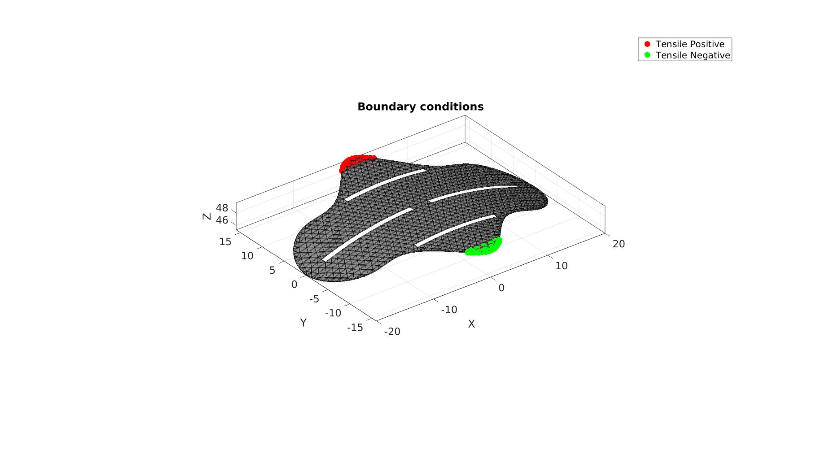
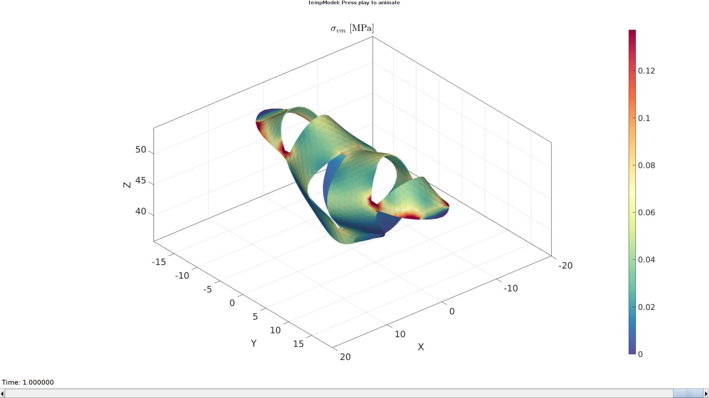

DEMO_febio_0080_kirigami_gripper_01
Below is a demonstration for:
- Building geometry for a thin sheet for a kirigami gripper
- Thickening the sheet into a pentahedral element mesh
- Curving/"folding" the sheet
- Defining the boundary conditions
- Coding the febio structure
- Running the model
- Importing and visualizing the results
Contents
- Keywords
- Plot settings
- Control parameters
- Definite kirigami model geometry
- Creating triangulated surface mesh
- Warping/curving/folding the initial geometry
- Thickening Mesh into pentahedral elements
- Defining the boundary conditions
- Defining the FEBio input structure
- Quick viewing of the FEBio input file structure
- Exporting the FEBio input file
- Running the FEBio analysis
- Import FEBio results
Keywords
- febio_spec version 4.0
- febio, FEBio
- kirigami
- displacement control, displacement boundary condition
- pentahedral elements, penta6
- static, solid
- hyperelastic, Ogden
clear; close all; clc;
Plot settings
fontSize=20; faceAlpha1=0.8; %transparency markerSize=40; %For plotted points markerSize2=10; %For nodes on patches lineWidth1=1; %For meshes cMap=spectral(250); %colormap
Control parameters
% Design Parameters BodyLength=40; %Total Length of shape along X axis BodyWidth=16; %Width of mid section along Y axis TabWidth=20; % Width of tab along X axis TabLength=8; %Length of Tab along Y Axis (Not including body with) FingerTaperLength=6; %Dist between finger end and start of taper (X axis) CurvatureRadius=50; %Radius of cylinder that shape is baked on. layerThickness = 0.125; %Gripper thickness TabLoadOffset=TabLength*0.75; %TabLength/2 would hold half of the tap cutWidth=1; %Cut width cutOffset=3; %Cut distance from edges and space in the middle %Mesh parameters pointSpacing=1; %Desired point spacing meshSearchTolerance=1e-3; %Tolerance for logic on mesh searching thresholds %FEBio Parameters pointSpacings=0.5; displacementMagnitude=7; %The displacement magnitude %Material parameter set E_youngs1=1; %Material Young's modulus nu1=0.4; %Material Poisson's ratio % FEA control settings numTimeSteps=20; %Number of time steps desired max_refs=25; %Max reforms max_ups=0; %Set to zero to use full-Newton iterations opt_iter=15; %Optimum number of iterations max_retries=5; %Maximum number of retires dtmin=(1/numTimeSteps)/100; %Minimum time step size dtmax=(1/numTimeSteps); %Maximum time step size runMode='external'; % Path names defaultFolder = fileparts(fileparts(mfilename('fullpath'))); savePath=fullfile(defaultFolder,'data','temp'); % Defining file names febioFebFileNamePart='tempModel'; febioFebFileName=fullfile(savePath,[febioFebFileNamePart,'.feb']); %FEB file name febioLogFileName=[febioFebFileNamePart,'.txt']; %FEBio log file name febioLogFileName_disp=[febioFebFileNamePart,'_disp_out.txt']; %Log file name for exporting displacement febioLogFileName_stress_prin=[febioFebFileNamePart,'_stress_prin_out.txt']; %Log file name for exporting principal stress febioLogFileName_force=[febioFebFileNamePart,'_force_out.txt']; %Log file name for exporting force
Definite kirigami model geometry
%V1 Generates 1/4 of the shape from the parameters and mirrors across X & Y V11=[-BodyLength/2 0; (-BodyLength/2)+FingerTaperLength BodyWidth/2; -TabWidth/2 BodyWidth/2; 0 (BodyWidth/2)+TabLength;]; %Mirrors the points across the Y Axis V12=flipud(V11(1:end-1,:)); V12(:,1)=-V12(:,1); V1=[V11; V12]; %Mirrors the points across the X Axis X=V1(2:6,1); Y=V1(2:6,2)*-1; V1=[V1; flipud([X,Y])]; shapeOpt=3; switch shapeOpt case 1 % As in case 2 % Fillet the sharp corners with a prescribed radius filletRadius=1.5; %Fillet radius np=ceil(((filletRadius*2*pi)/4)/pointSpacing); %Number of points used to construct each fillet edge V1=filletCurve(V1,filletRadius,np,1); V1=evenlySpaceCurve(V1,pointSpacing,'linear',1); case 3 % Use a cubic smoothing spline and resample evenly csapsPar=0.9; %Smoothing parameter for cublic smoothing spline V1=evenlySpaceCurve(V1,pointSpacing,csapsPar,1); end %Defining cuts V2=[(-BodyLength/2)+cutOffset cutWidth/2;... (-BodyLength/2)+cutOffset -cutWidth/2;... -cutOffset/2 -cutWidth/2;... -cutOffset/2 cutWidth/2;]; V3=flipud(V2); V3(:,1)=-V3(:,1); V4=[(-TabWidth/2)+cutOffset BodyWidth/2+cutWidth/2;... (-TabWidth/2)+cutOffset BodyWidth/2-cutWidth/2;... ( TabWidth/2)-cutOffset BodyWidth/2-cutWidth/2;... ( TabWidth/2)-cutOffset BodyWidth/2+cutWidth/2;]; V5=flipud(V4); V5(:,2)=-V5(:,2);
Creating triangulated surface mesh
% Define input parameters inputStructureTriMesh.regionCell={V1,V2,V3,V4,V5}; %Region = V1 boundary with V2..VN as holes inputStructureTriMesh.pointSpacing=pointSpacing; inputStructureTriMesh.plotOn=0; inputStructureTriMesh.mustPointsInner=[]; inputStructureTriMesh.mustPointsBoundary=[V1;V2;V3;V4;V5]; %Hold on to all boundary points inputStructureTriMesh.resampleCurveOpt=1; %Turn on/off curve resampling inputStructureTriMesh.smoothIterations=250; [F,V]=regionTriMesh2D(inputStructureTriMesh); %F=fliplr(F)
Warping/curving/folding the initial geometry
%Z Axis follows circular function to apply curvature
V(:,3)=sqrt((CurvatureRadius^2-(V(:,1).^2))-CurvatureRadius);
Thickening Mesh into pentahedral elements
layerThicknessSpat=layerThickness.*ones(size(V,1),1); dirSet = 1; %Direction for thickening numSteps = ceil(mean(layerThicknessSpat)/pointSpacing); %Number of elements along thickness direction [E,V,Fp1,Fp2]=patchThick(F,V,dirSet,layerThicknessSpat,numSteps); %Get mesh %Get mesh faces for pentahedral mesh (note this is a cell for pentahedral %featuring a set of triangles as well as a set of quads. F = element2patch(E,[],'penta6'); %Get boundary faces (two sets due to pentahedra) indb = tesBoundary(F); %Cell containing boundary face indices Fb = {F{1}(indb{1},:),F{2}(indb{2},:)}; %Cell containing boundary faces
Plotting meshed model
cFigure; hold on; title('The meshed model','FontSize',fontSize); % gpatch(F,V,'g','k',0.5); %All faces gpatch(Fb,V,'gw','k',faceAlpha1); %Boundary faces % patchNormPlot(F,V); %Visualise normal directions axisGeom(gca,fontSize); camlight headlight; drawnow;
Defining the boundary conditions
%Simple boundary defined as any vertex whos Y Axis >6 OR <-6 (i.e. the tab) %Prescribed displacement nodes bcPrescribeList1=find(V(:,2)> (BodyWidth/2)+TabLoadOffset+meshSearchTolerance); bcPrescribeList2=find(V(:,2)< -(BodyWidth/2)-TabLoadOffset-meshSearchTolerance);
Visualizing boundary conditions. Markers plotted on the semi-transparent model denote the nodes in the various boundary condition lists.
hf=cFigure; title('Boundary conditions','FontSize',fontSize); xlabel('X','FontSize',fontSize); ylabel('Y','FontSize',fontSize); zlabel('Z','FontSize',fontSize); hold on; gpatch(Fb,V,'kw','k',0.5); hl(1)=plotV(V(bcPrescribeList1,:),'r.','MarkerSize',markerSize); hl(2)=plotV(V(bcPrescribeList2,:),'g.','MarkerSize',markerSize); legend(hl,{'Tensile Positive', 'Tensile Negative'}); axisGeom(gca,fontSize); camlight headlight; drawnow;
Defining the FEBio input structure
See also febioStructTemplate and febioStruct2xml and the FEBio user manual.
%Get a template with default settings [febio_spec]=febioStructTemplate; %febio_spec version febio_spec.ATTR.version='4.0'; %Module section febio_spec.Module.ATTR.type='solid'; %Control section febio_spec.Control.analysis='STATIC'; febio_spec.Control.time_steps=numTimeSteps; febio_spec.Control.step_size=1/numTimeSteps; febio_spec.Control.solver.max_refs=max_refs; febio_spec.Control.solver.qn_method.max_ups=max_ups; febio_spec.Control.time_stepper.dtmin=dtmin; febio_spec.Control.time_stepper.dtmax=dtmax; febio_spec.Control.time_stepper.max_retries=max_retries; febio_spec.Control.time_stepper.opt_iter=opt_iter; %Material section materialName1='Material1'; febio_spec.Material.material{1}.ATTR.name=materialName1; febio_spec.Material.material{1}.ATTR.type='neo-Hookean'; febio_spec.Material.material{1}.ATTR.id=1; febio_spec.Material.material{1}.E=E_youngs1; febio_spec.Material.material{1}.v=nu1; % Mesh section % -> Nodes %%Area of interest febio_spec.Mesh.Nodes{1}.ATTR.name='Object1'; %The node set name febio_spec.Mesh.Nodes{1}.node.ATTR.id=(1:size(V,1))'; %The node id's febio_spec.Mesh.Nodes{1}.node.VAL=V; %The nodel coordinates % -> Elements partName1='KirigamiGripper'; febio_spec.Mesh.Elements{1}.ATTR.name=partName1; %Name of this part febio_spec.Mesh.Elements{1}.ATTR.type='penta6'; %Element type febio_spec.Mesh.Elements{1}.elem.ATTR.id=(1:1:size(E,1))'; %Element id's febio_spec.Mesh.Elements{1}.elem.VAL=E; %The element matrix % -> NodeSets nodeSetName1='bcPrescribeList1'; nodeSetName2='bcPrescribeList2'; febio_spec.Mesh.NodeSet{1}.ATTR.name=nodeSetName1; febio_spec.Mesh.NodeSet{1}.VAL=mrow(bcPrescribeList1); febio_spec.Mesh.NodeSet{2}.ATTR.name=nodeSetName2; febio_spec.Mesh.NodeSet{2}.VAL=mrow(bcPrescribeList2); %MeshDomains section febio_spec.MeshDomains.SolidDomain.ATTR.name=partName1; febio_spec.MeshDomains.SolidDomain.ATTR.mat=materialName1; %Boundary condition section % -> Fix boundary conditions febio_spec.Boundary.bc{1}.ATTR.name='zero_displacement_xz_01'; febio_spec.Boundary.bc{1}.ATTR.type='zero displacement'; febio_spec.Boundary.bc{1}.ATTR.node_set=nodeSetName1; febio_spec.Boundary.bc{1}.x_dof=1; febio_spec.Boundary.bc{1}.y_dof=0; febio_spec.Boundary.bc{1}.z_dof=1; febio_spec.Boundary.bc{2}.ATTR.name='prescibed_displacement_y_01'; febio_spec.Boundary.bc{2}.ATTR.type='prescribed displacement'; febio_spec.Boundary.bc{2}.ATTR.node_set=nodeSetName1; febio_spec.Boundary.bc{2}.dof='y'; febio_spec.Boundary.bc{2}.value.ATTR.lc=1; febio_spec.Boundary.bc{2}.value.VAL=displacementMagnitude/2; febio_spec.Boundary.bc{2}.relative=0; febio_spec.Boundary.bc{3}.ATTR.name='zero_displacement_xz_01'; febio_spec.Boundary.bc{3}.ATTR.type='zero displacement'; febio_spec.Boundary.bc{3}.ATTR.node_set=nodeSetName2; febio_spec.Boundary.bc{3}.x_dof=1; febio_spec.Boundary.bc{3}.y_dof=0; febio_spec.Boundary.bc{3}.z_dof=1; febio_spec.Boundary.bc{4}.ATTR.name='prescibed_displacement_y_01'; febio_spec.Boundary.bc{4}.ATTR.type='prescribed displacement'; febio_spec.Boundary.bc{4}.ATTR.node_set=nodeSetName2; febio_spec.Boundary.bc{4}.dof='y'; febio_spec.Boundary.bc{4}.value.ATTR.lc=1; febio_spec.Boundary.bc{4}.value.VAL=-displacementMagnitude/2; febio_spec.Boundary.bc{4}.relative=0; %LoadData section % -> load_controller febio_spec.LoadData.load_controller{1}.ATTR.name='LC_1'; febio_spec.LoadData.load_controller{1}.ATTR.id=1; febio_spec.LoadData.load_controller{1}.ATTR.type='loadcurve'; febio_spec.LoadData.load_controller{1}.interpolate='LINEAR'; %febio_spec.LoadData.load_controller{1}.extend='CONSTANT'; febio_spec.LoadData.load_controller{1}.points.pt.VAL=[0 0; 1 1]; %Output section % -> log file febio_spec.Output.logfile.ATTR.file=febioLogFileName; febio_spec.Output.logfile.node_data{1}.ATTR.file=febioLogFileName_disp; febio_spec.Output.logfile.node_data{1}.ATTR.data='ux;uy;uz'; febio_spec.Output.logfile.node_data{1}.ATTR.delim=','; febio_spec.Output.logfile.node_data{2}.ATTR.file=febioLogFileName_force; febio_spec.Output.logfile.node_data{2}.ATTR.data='Rx;Ry;Rz'; febio_spec.Output.logfile.node_data{2}.ATTR.delim=','; febio_spec.Output.logfile.element_data{1}.ATTR.file=febioLogFileName_stress_prin; febio_spec.Output.logfile.element_data{1}.ATTR.data='s1;s2;s3'; febio_spec.Output.logfile.element_data{1}.ATTR.delim=','; % Plotfile section febio_spec.Output.plotfile.compression=0;
Quick viewing of the FEBio input file structure
The febView function can be used to view the xml structure in a MATLAB figure window.
%%|febView(febio_spec); %Viewing the febio file|
Exporting the FEBio input file
Exporting the febio_spec structure to an FEBio input file is done using the febioStruct2xml function.
febioStruct2xml(febio_spec,febioFebFileName); %Exporting to file and domNode %system(['gedit ',febioFebFileName,' &']);
Running the FEBio analysis
To run the analysis defined by the created FEBio input file the runMonitorFEBio function is used. The input for this function is a structure defining job settings e.g. the FEBio input file name. The optional output runFlag informs the user if the analysis was run succesfully.
febioAnalysis.run_filename=febioFebFileName; %The input file name febioAnalysis.run_logname=febioLogFileName; %The name for the log file febioAnalysis.disp_on=1; %Display information on the command window febioAnalysis.runMode=runMode; febioAnalysis.maxLogCheckTime=10; %Max log file checking time [runFlag]=runMonitorFEBio(febioAnalysis);%START FEBio NOW!!!!!!!!
%%%%%%%%%%%%%%%%%%%%%%%%%%%%%%%%%%%%%%%%%%%%%%%%%%%%%%%%%%%%%%%%%%%%%%%%%%%
--------> RUNNING/MONITORING FEBIO JOB <-------- 01-May-2023 10:55:39
FEBio path: /home/kevin/FEBioStudio/bin/febio4
# Attempt removal of existing log files 01-May-2023 10:55:39
* Removal succesful 01-May-2023 10:55:39
# Attempt removal of existing .xplt files 01-May-2023 10:55:39
* Removal succesful 01-May-2023 10:55:39
# Starting FEBio... 01-May-2023 10:55:39
Max. total analysis time is: Inf s
* Waiting for log file creation 01-May-2023 10:55:39
Max. wait time: 10 s
* Log file found. 01-May-2023 10:55:39
# Parsing log file... 01-May-2023 10:55:39
number of iterations : 9 01-May-2023 10:55:40
number of reformations : 9 01-May-2023 10:55:40
------- converged at time : 0.05 01-May-2023 10:55:40
number of iterations : 7 01-May-2023 10:55:40
number of reformations : 7 01-May-2023 10:55:40
------- converged at time : 0.1 01-May-2023 10:55:40
number of iterations : 6 01-May-2023 10:55:40
number of reformations : 6 01-May-2023 10:55:40
------- converged at time : 0.141667 01-May-2023 10:55:40
number of iterations : 6 01-May-2023 10:55:40
number of reformations : 6 01-May-2023 10:55:40
------- converged at time : 0.185 01-May-2023 10:55:40
number of iterations : 6 01-May-2023 10:55:40
number of reformations : 6 01-May-2023 10:55:40
------- converged at time : 0.229667 01-May-2023 10:55:40
number of iterations : 5 01-May-2023 10:55:40
number of reformations : 5 01-May-2023 10:55:40
------- converged at time : 0.2754 01-May-2023 10:55:40
number of iterations : 5 01-May-2023 10:55:40
number of reformations : 5 01-May-2023 10:55:40
------- converged at time : 0.321987 01-May-2023 10:55:40
number of iterations : 5 01-May-2023 10:55:40
number of reformations : 5 01-May-2023 10:55:40
------- converged at time : 0.369256 01-May-2023 10:55:40
number of iterations : 5 01-May-2023 10:55:41
number of reformations : 5 01-May-2023 10:55:41
------- converged at time : 0.417071 01-May-2023 10:55:41
number of iterations : 5 01-May-2023 10:55:41
number of reformations : 5 01-May-2023 10:55:41
------- converged at time : 0.465324 01-May-2023 10:55:41
number of iterations : 5 01-May-2023 10:55:41
number of reformations : 5 01-May-2023 10:55:41
------- converged at time : 0.513926 01-May-2023 10:55:41
number of iterations : 5 01-May-2023 10:55:41
number of reformations : 5 01-May-2023 10:55:41
------- converged at time : 0.562807 01-May-2023 10:55:41
number of iterations : 5 01-May-2023 10:55:41
number of reformations : 5 01-May-2023 10:55:41
------- converged at time : 0.611912 01-May-2023 10:55:41
number of iterations : 6 01-May-2023 10:55:41
number of reformations : 6 01-May-2023 10:55:41
------- converged at time : 0.661197 01-May-2023 10:55:41
number of iterations : 7 01-May-2023 10:55:41
number of reformations : 7 01-May-2023 10:55:41
------- converged at time : 0.710624 01-May-2023 10:55:41
number of iterations : 5 01-May-2023 10:55:42
number of reformations : 5 01-May-2023 10:55:42
------- converged at time : 0.751909 01-May-2023 10:55:42
number of iterations : 5 01-May-2023 10:55:42
number of reformations : 5 01-May-2023 10:55:42
------- converged at time : 0.794937 01-May-2023 10:55:42
number of iterations : 6 01-May-2023 10:55:42
number of reformations : 6 01-May-2023 10:55:42
------- converged at time : 0.839359 01-May-2023 10:55:42
number of iterations : 6 01-May-2023 10:55:42
number of reformations : 6 01-May-2023 10:55:42
------- converged at time : 0.884897 01-May-2023 10:55:42
number of iterations : 5 01-May-2023 10:55:42
number of reformations : 5 01-May-2023 10:55:42
------- converged at time : 0.931327 01-May-2023 10:55:42
number of iterations : 5 01-May-2023 10:55:42
number of reformations : 5 01-May-2023 10:55:42
------- converged at time : 0.978472 01-May-2023 10:55:42
number of iterations : 3 01-May-2023 10:55:42
number of reformations : 3 01-May-2023 10:55:42
------- converged at time : 1 01-May-2023 10:55:42
Elapsed time : 0:00:03 01-May-2023 10:55:42
N O R M A L T E R M I N A T I O N
# Done 01-May-2023 10:55:42
%%%%%%%%%%%%%%%%%%%%%%%%%%%%%%%%%%%%%%%%%%%%%%%%%%%%%%%%%%%%%%%%%%%%%%%%%%%
Import FEBio results
if runFlag==1 %i.e. a succesful run
% Importing nodal displacements from a log file dataStruct=importFEBio_logfile(fullfile(savePath,febioLogFileName_disp),0,1); %Access data N_disp_mat=dataStruct.data; %Displacement timeVec=dataStruct.time; %Time %Create deformed coordinate set V_DEF=N_disp_mat+repmat(V,[1 1 size(N_disp_mat,3)]);
Importing element stress from a log file
dataStruct=importFEBio_logfile(fullfile(savePath,febioLogFileName_stress_prin),0,1);
%Access data
E_stress_mat=dataStruct.data;
E_stress_mat_VM=sqrt(( (E_stress_mat(:,1,:)-E_stress_mat(:,2,:)).^2 + ...
(E_stress_mat(:,2,:)-E_stress_mat(:,3,:)).^2 + ...
(E_stress_mat(:,1,:)-E_stress_mat(:,3,:)).^2 )/2); %Von Mises stress
Plotting the simulated results using anim8 to visualize and animate deformations
[CV]=faceToVertexMeasure(E,V,E_stress_mat_VM(:,:,end));
% Create basic view and store graphics handle to initiate animation
hf=cFigure; %Open figure /usr/local/MATLAB/R2020a/bin/glnxa64/jcef_helper: symbol lookup error: /lib/x86_64-linux-gnu/libpango-1.0.so.0: undefined symbol: g_ptr_array_copy
gtitle([febioFebFileNamePart,': Press play to animate']);
title('$\sigma_{vm}$ [MPa]','Interpreter','Latex')
hp=gpatch(Fb,V_DEF(:,:,end),CV,'none',1,lineWidth1); %Add graphics object to animate
for qp=1:1:numel(hp) %For all graphics objects e.g. triangles/quads
% hp(qp).Marker=".";
% hp(qp).MarkerSize=markerSize2;
hp(qp).FaceColor='interp';
end
axisGeom(gca,fontSize);
colormap(cMap); colorbar;
caxis([min(E_stress_mat_VM(:)) max(E_stress_mat_VM(:))/2]);
axis(axisLim(V_DEF)); %Set axis limits statically
view(140,30);
camlight headlight;
% Set up animation features
animStruct.Time=timeVec; %The time vector
for qt=1:1:size(N_disp_mat,3) %Loop over time increments
[CV]=faceToVertexMeasure(E,V,E_stress_mat_VM(:,:,qt));
%Set entries in animation structure
animStruct.Handles{qt}=[hp(1) hp(1) hp(2) hp(2)]; %Handles of objects to animate
animStruct.Props{qt}={'Vertices','CData','Vertices','CData'}; %Properties of objects to animate
animStruct.Set{qt}={V_DEF(:,:,qt),CV,V_DEF(:,:,qt),CV}; %Property values for to set in order to animate
end
anim8(hf,animStruct); %Initiate animation feature
drawnow;
 end